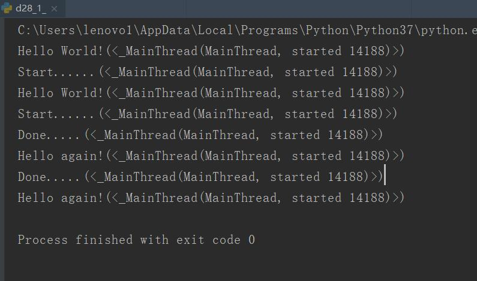
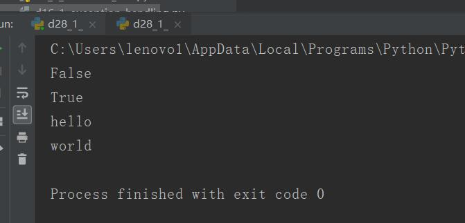

原文连接:https://www.cnblogs.com/ruigege0000/p/11682120.html
一、 asyncio
1.python3.4开始引入标准库之中，内置对异步io的支持
2.asyncio本身是一个消息循环
3.步骤：
（1）创建消息循环
（2）把协程导入
（3）关闭
4.举例：
import threading
#引入异步io包
import asyncio
#使用协程
@asyncio.coroutine
def hello():
print("Hello World!(%s)"%threading.current_thread())
print("Start......(%s)"%threading.current_thread())
yield from asyncio.sleep(5)
print("Done.....(%s)"%threading.current_thread())
print("Hello again!(%s)"%threading.current_thread())
#启动消息循环
loop = asyncio.get_event_loop()
#定义任务
tasks = [hello(),hello()]
#asyncio使用wait等待task执行完毕
loop.run_until_complete(asyncio.wait(tasks))
#关闭消息循环
loop.close()二、asyncio and await
1.为了更好的表示异步io
2.python3.5引入
3.让协程代码更加简洁
4.使用上，可以简单的进行替换
（1）用async来替换@asyncio,coroutine
（2）用await来替换yield from
按照上面这个语法可以来改写前面的例子，运行结果是完全一致的
三、aiohttp
1.asyncio实现单线程的并发io，在客户端用处不大
2.在服务端可以asyncio+coroutine配合，因为http是io操作
3.asyncio实现了tcp,udp,ssl等协议
4.aiohttp是基于asyncio实现的http框架
5.例子：
import asyncio
from aiohttp import web
async def index(request):
await asyncio.sleep(0.5)
return web.Response(body=b"<h1>Index</h1>")
async def hello(request):
await asyncio.sleep(0.5)
text = "<h1>hello,%s!</h1>"%request.match_info["name"]
return web.Response(body=text.encode("utf-8"))
async def init(loop):
app = web.Application(loop=loop)
app.router.add_route("GET","/",index)
app.router.add_route("GET","/hellp/{name}",hello)
srv = await loop.create_server(app.make_handler(),"127.0.0.1",8000)
print("Server started at http://127.0.0.1:8000...")
return srv
loop = asyncio.get_event_loop()
loop.run_until_complete(init(loop))
loop.run_forever()
三、current,futures
1. python3新增的库
2.类似其它语言的线程池的概念
3.利用multiprocessing实现真正的并行计算（当然要求我们的CPU是多核的）
4.核心原理：以子进程的形式，实现多个python解释器
从而令python程序，可以利用多核CPU来提升执行速度。由于子进程于主解释器相分离，所以他们的全局解释器锁也是相互独立的，每个子进程都能完整的使用一个CPU内核
5.concurrent.futures.Executor
（1）ThreadPoolExecutor
（2）ProcessPoolExecutor
（3）执行的时候需要自行选择
（4）submit(fn,args,kwargs)
fn:异步执行的函数
args,kwargs参数
import time
from concurrent.futures import ThreadPoolExecutor
def return_future(msg):
time.sleep(3)
return msg
#创建一个线程池
pool = ThreadPoolExecutor(max_workers = 2)#参数是2，代表里面有两个线程干活
#往线程池里面加入两个task
f1 = pool.submit(return_future,"hello")
f2 = pool.submit(return_future,"world")
time.sleep(1)
#等待执行完毕
print(f1.done())
time.sleep(3)
print(f2.done())
#结果
print(f1.result())
print(f2.result())
五、源码
d28_1_asynchronization_examples.py
https://github.com/ruigege66/Python_learning/blob/master/d28_1_asynchronization_examples.py
2.CSDN：https://blog.csdn.net/weixin_44630050（心悦君兮君不知-睿）
3.博客园：https://www.cnblogs.com/ruigege0000/
4.欢迎关注微信公众号：傅里叶变换，个人公众号，仅用于学习交流，后台回复”礼包“，获取大数据学习资料